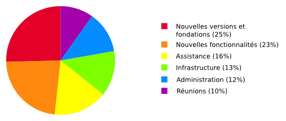

Dans notre dernier message nous expliquions pourquoi nous avons besoin de dons. Aujourd’hui, nous vous parlons plus en détail de comment nous utilisons ces dons.
En 2015, nous avons dépensé environ 184 000€, répartis comme suit :

Même sans rien ajouter de nouveau dans Tails, publier des nouvelles versions toutes les 6 semaines représente beaucoup de travail qui implique de corriger les problèmes trouvés dans les versions précédentes, de documenter les changements, de migrer vers les nouvelles versions de Debian, de GNOME et du Navigateur Tor, et d'être sûr que les fondations de Tails restent pertinentes. Comme les sorties de nouvelles versions en urgence sont imprévisibles, il est difficile de les financer avec des subventions et à la place nous comptons généralement sur les dons.
Développer de nouvelles fonctionnalités n'est pas la plus grosse partie de notre budget. Elles sont presque exclusivement payées par des subventions ou développées par des bénévoles. Depuis 2015, les nouvelles fonctionnalités qui n'ont pas été financées par des subventions incluent :
- Intégrer le client Bitcoin Electrum.
- Remplacer Vidalia par Onion Circuits.
- Continuer à travailler sur une nouvelle version du Tails Greeter.
- Encadrer un Google Summer of Code sur Tails Server pour permettre de faire tourner des services onion depuis Tails (sites web, outils collaboratifs, etc.).
- Ajouter un mode hors-ligne qui désactive toutes les connexions réseau.
- Ajouter le support des bridges Tor
obfs4. - Écrire de nombreux ajouts pour notre site web et pour notre documentation.
Notre équipe d'assistance aide des centaines de personnes utilisant Tails chaque mois. Chaque demande nous coûte 6€ en moyenne à traiter. En 2016 notre équipe d'assistance a été payé entièrement grâce à des dons.
Organiser nos propres réunions et assister à des conférences dans notre domaine est essentiel pour garder notre communauté vivante et à jour. Mais comme il est généralement difficile d'être financé par des subventions, les dons nous aident beaucoup. Depuis 2015, nous avons assisté à plus de 15 conférences internationales sur les logiciels libres (DebConf), les libertés sur Internet (IFF), le hacking (32C3), les droits humains (RightsCon) et le journalisme (Logan CIJ). Et nous avons organisé plus de 10 réunions internes et sprints de développement.
En 2015, nous avons énormément travaillé sur notre infrastructure, par exemple en écrivant des suites de test automatisés pour vérifier en permanence le bon fonctionnement de nos images ISO, pour automatiser la compilation des images ISO de développement qui permettent de faire des tests, etc. Ce travail est invisible pour vous mais il permet, par exemple, de publier plus rapidement des versions en urgence quand nous découvrons des problèmes graves.
Garder Tails efficace implique aussi de faire pas mal de travaux administratifs pour récolter des fonds, faire la comptabilité, organiser le travail, écrire les rapports, etc.
Depuis 2015, nous avons ajouté les traductions en persan et en italien à notre site web et nous avons travaillé sur un prototype de plate-forme web de traduction pour permettre à plus de personnes de traduire et à plus de personnes différentes d'utiliser Tails.
Si vous aimez notre travail, merci de prendre une minute pour maintenir Tails en vie.